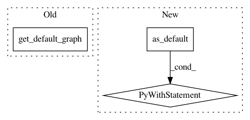

975ba2635d1185e68374e8f0bba6b468d5c90f1a,nnef_tools/io/tf/graphdef/reader.py,,_add_output_shapes,#Any#,138
Before Change
import tensorflow as tf
tf.import_graph_def(graph_def, name="")
return tf.get_default_graph().as_graph_def(add_shapes=True)
def _get_dtypes(graph_def):
After Change
import tensorflow as tf
graph = tf.Graph()
with graph.as_default():
tf.import_graph_def(graph_def, name="")
return graph.as_graph_def(add_shapes=True)
def _get_dtypes(graph_def):
try:
import tensorflow.compat.v1 as tf
except ImportError:
In pattern: SUPERPATTERN
Frequency: 3
Non-data size: 3
Instances
Project Name: KhronosGroup/NNEF-Tools
Commit Name: 975ba2635d1185e68374e8f0bba6b468d5c90f1a
Time: 2021-03-31
Author: viktor.gyenes@aimotive.com
File Name: nnef_tools/io/tf/graphdef/reader.py
Class Name:
Method Name: _add_output_shapes
Project Name: emedvedev/attention-ocr
Commit Name: ab4fec6e3c437d33b59c46a92d5b4c282be1e4dd
Time: 2017-10-05
Author: edward.medvedev@gmail.com
File Name: aocr/util/export.py
Class Name: Exporter
Method Name: save
Project Name: keras-team/keras
Commit Name: 17eab763320e1cb310ffe0235e277ae63d1fbd97
Time: 2019-03-04
Author: francois.chollet@gmail.com
File Name: keras/backend/tensorflow_backend.py
Class Name:
Method Name: clear_session